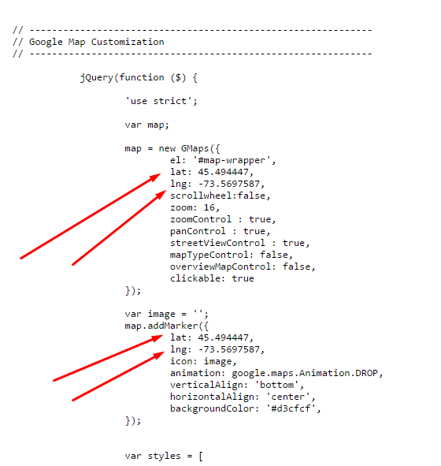
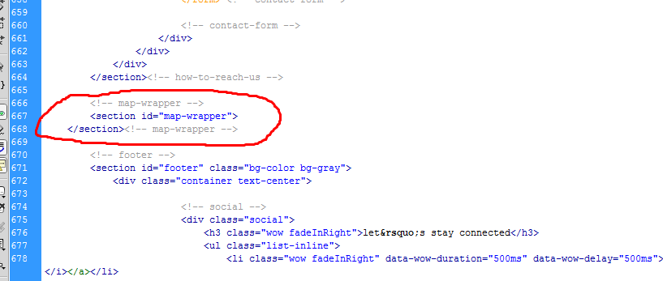
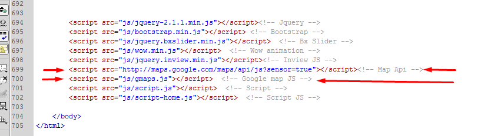
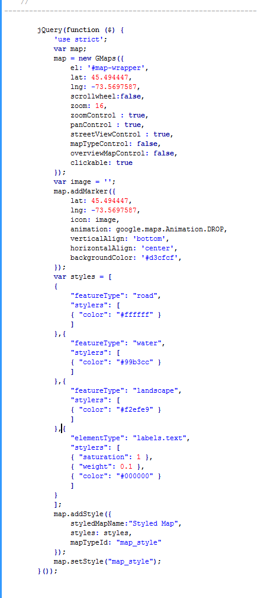

Baratheon
One Page Parallax Law Firm Theme
Thank you for purchasing One Page Parallax Law Firm Theme . If you have any questions that are beyond the scope of this help file, please feel free to email, via my user page contact form or put a ticket at Support Center . Thanks so much!
The html template uses Bootstrap 3 with valid HTMl5 tags. This theme is a responisve layout with one column. All of the information in content area is nested within a class and comes with predefined classes.
<!-- case-resolving -->
<section id="case-resolving" class="text-center bg-image bg-green">
<div class="container">
<div class="row">
<div class="col-lg-12 col-sm-12 col-sm-12 col-xs-12">
<h1 class="wow fadeInLeft" data-wow-duration="700ms" data-wow-delay="700ms">Have a case that needs resolving?</h1>
<h2 class="wow fadeInRight" data-wow-duration="700ms" data-wow-delay="700ms">Give us the facts and we’ll take care of the rest.</h2>
<button class="btn btn-transparent wow fadeInUp" data-wow-duration="700ms" data-wow-delay="700ms"><a href="#">Get In Touch Now</a></button>
</div>
</div>
</div>
</section><!-- /case-resolving -->
I'm using three main CSS files in this theme. The first one bootstrap.css. and next one style.css which for this template and comes with the default theme color. and the last one is for theme colors. we have 4 css files for 4 color options.
If you would like to edit a specific section of the site, simply find the appropriate label in the CSS file, and then scroll down until you find the appropriate style that needs to be edited.
This theme imports three Javascript files.
jQuery
My custom scripts
Some plugin
jQuery is a Javascript library that greatly reduces the amount of code that you must write.
Most of the animation in this site is carried out from the customs scripts. There are a few functions worth looking over.
[some Javascript goes here...along with an general explanation]
[some Javascript goes here...along with an general explanation]
[some Javascript goes here...along with an general explanation]
In addition to the custom scripts, I implement a few "tried and true" plugins to create the effects. This plugin is packed, so you won't need to manually edit anything in the file. The only necessary thing to know is how to call the method. For example:
[some Javascript goes here...along with an general explanation]
You have to change latitude and longtitude value in script-home.js file inside the js folder.
If you dont know how to get latitude and longitude value search on google or send us your location in google map,
we will do that for you.
here is a screenshot that shows where exactly you have to change these values.

Removing the map
it has a long process, sorry for that - but should take you only 1 minutes if you follow the insruction properly,
you have to go through 3 steps for this.
1. remove the map html mark up.

2. Remove the google map js and map api js.

3. remove whole maps functions and styling from script-home.js file from js folder.

if you think its difficult or dont have time for this - just shoot us an email we will send you a non-map version right away.
Once again, thank you so much for purchasing this theme. As I said at the beginning, I'd be glad to help you if you have any questions relating to this theme. No guarantees, but I'll do my best to assist. If you have any queries, please feel free to contact us at Support Center.